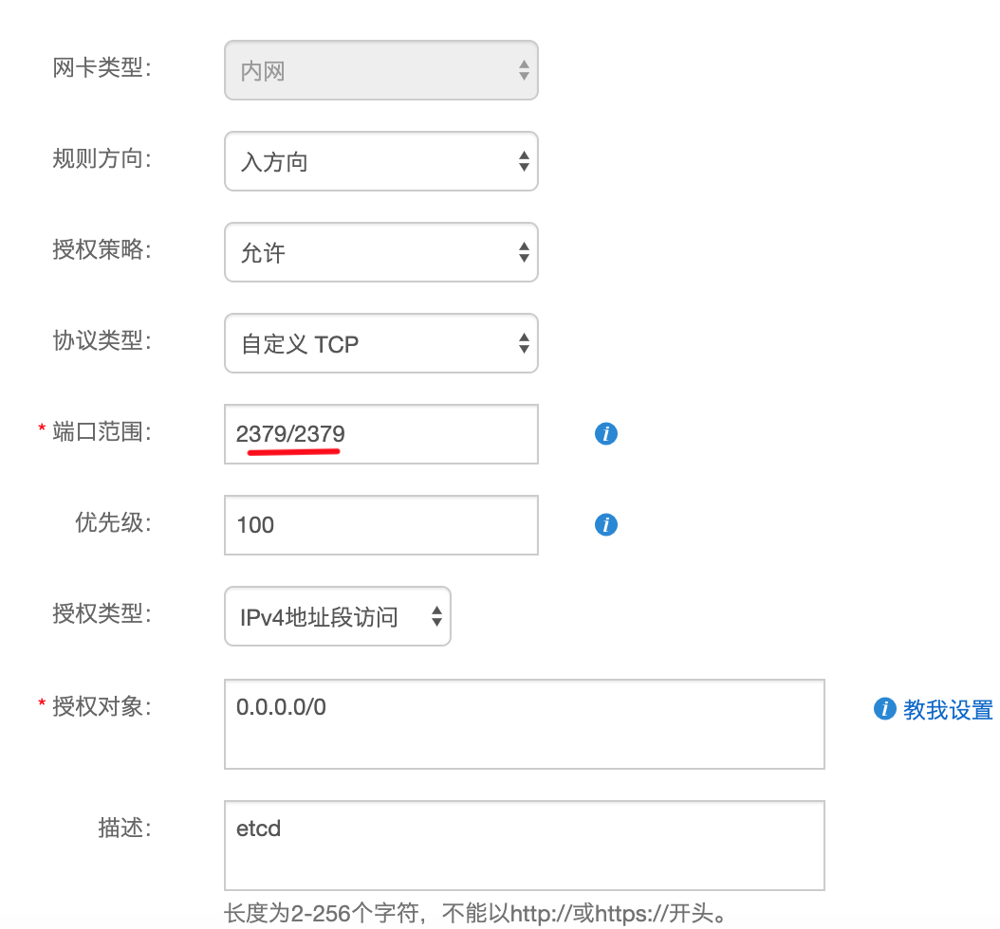
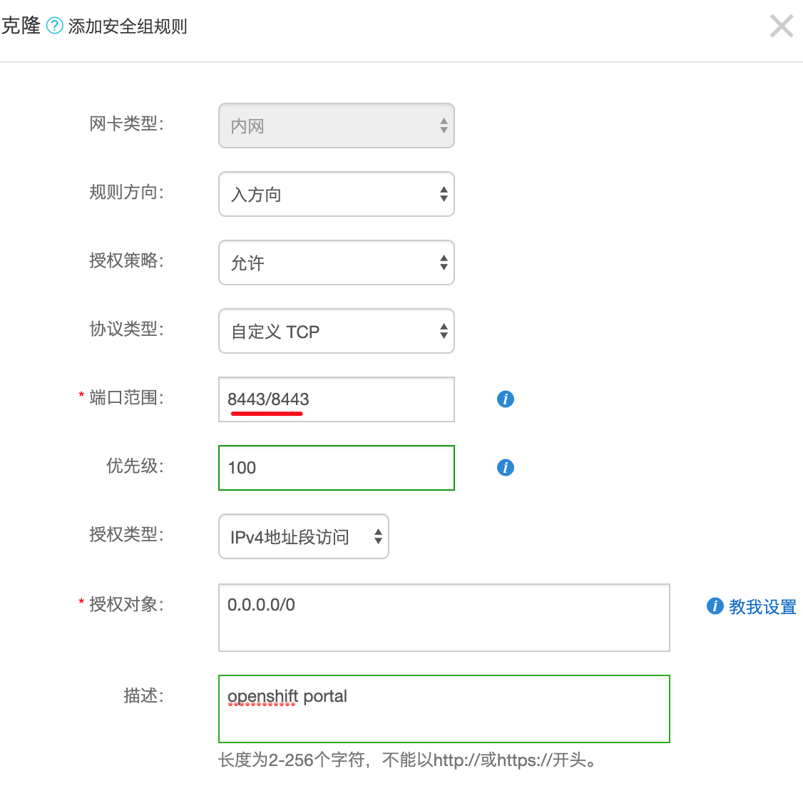

openshift 集群安装¶
安装计划¶
在安装你openshift集群之前, 需要根据集群规模和资源情况, 来规划各个基础组件的部署安排. 如果有超过三台或者以上的机器, 就可以考虑高可用了. Master, Node, Etcd, Router, ES, Prometheus, Grafana 等组件都支持多实例部署. 资源许可 的情况下, etcd集群最好单独部署, 否则可以跟master部在一起. 从OKD 3.10开始, RHEL/CENTOS操作系统上以RPM形式部署, RHEL Atomic Host 则以容器镜像形式部署.
系统要求¶
所有主机¶
- 主机之间可以互相通信, 也能访问外网. 如果是Router机器的话, 还需要配置DNS泛域解释.
- 开启selinux
- 开启 DNS 和 NetworkManager
- iptables是默认打开的, 需要打开端口有53, 4789, 8443, 10250, 2379, 2380等.详细见官档页面
Master¶
- 操作系统: Fedora 21, CentOS 7.4, Red Hat Enterprise Linux (RHEL) 7.4 或者更新
- 最少4核vCPU, 16GB内存
- 40GB 磁盘空间 （/var目录)
Node¶
- 操作系统: Fedora 21, CentOS 7.4, Red Hat Enterprise Linux (RHEL) 7.4 或者更新
- 最少1核vCPU, 8GB内存
- 15GB 磁盘空间 （/var目录)
外部etcd¶
- 20GB 磁盘空间 （/var/lib/etcd 目录)
准备主机环境¶
一. 在阿里云申请了云主机后, 在master上设置主机名, 设置ssh key和主机间免密码登陆
# cat /etc/hosts
172.26.7.167 node01-inner
172.26.100.176 node02-inner
172.26.7.168 node03-inner
# ssh-keygen （所有主机）
# for host in node01-inner node02-inner node03-inner; do ssh-copy-id -i ~/.ssh/id_rsa.pub $host; done
二. 安装基础 rpm （所有主机）
# yum install wget git net-tools bind-utils yum-utils iptables-services bridge-utils bash-completion kexec-tools sos psacct java-1.8.0-openjdk-headless python-passlib
# yum update
# reboot
三. 安装 Ansible （Master）
# yum -y install https://dl.fedoraproject.org/pub/epel/epel-release-latest-7.noarch.rpm
# sed -i -e "s/^enabled=1/enabled=0/" /etc/yum.repos.d/epel.repo
# yum -y --enablerepo=epel install ansible pyOpenSSL
# cd ~
# wget https://github.com/openshift/openshift-ansible/archive/openshift-ansible-3.11.100-1.tar.gz
# tar xzvf openshift-ansible-3.11.100-1.tar.gz
# cd openshift-ansible-openshift-ansible-3.11.100-1/
四. 安装 Docker, 默认配置即可. 需要定制化options的话, 在ansible hosts文件里定义.
# yum install docker-1.13.1
# rpm -V docker-1.13.1
# docker version
五. 在控制台设置开放端口,打开 2379（etcd）,8443(管理页面)端口, 参考官档
开放端口 2379 开放端口 8443
正式执行安装¶
一. 根据官方文档, 准备好ansible host 文件. 保存到master主机/etc/ansible/host.
二. 执行条件检查
# ansible-playbook playbooks/prerequisites.yml |tee ../prerequisites.log
三. 执行安装. 如果途中失败的话, 修复问题后可重复执行.
# ansible-playbook -vvv playbooks/deploy_cluster.yml |tee ../deploy_cluster.log
四. 安装后项目环境初始化
- 添加超级管理员用户，注意管理员用户不能扩散，将admin密码按需替换(新增的用户都要在oc登陆一次使数据能同步到etcd)
# htpasswd -b /etc/origin/master/htpasswd admin {admin密码}
# oc login -u system:admin https://<admin portal>:8443
# oc adm policy add-cluster-role-to-user cluster-admin admin
- 禁止普通用户自建项目
# oc patch clusterrolebinding.rbac self-provisioners -p '{"subjects": null}'
- 把hawkular heapster和cassandra调度到infra节点
# oc project openshift-infra
# oc patch rc heapster -p '{"spec": {"template": {"spec": {"nodeSelector": {"node-role.kubernetes.io/infra": "true"}}}}}'
# oc patch rc hawkular-cassandra-1 -p '{"spec": {"template": {"spec": {"nodeSelector": {"node-role.kubernetes.io/infra": "true"}}}}}'
- 添加全局普通用户，将密码按需替换：
# htpasswd -b /etc/origin/master/htpasswd readonly {密码}
- 添加项目管理用户，将密码按需替换：
# htpasswd -b /etc/origin/master/htpasswd hyperion {密码}
- 添加项目,指定用户权限, 使网络可被全局访问
# oc adm new-project hyperion --admin='hyperion' --description='Hyperion微服务中间层' --display-name='微服务中间层'
# oc adm policy add-role-to-user view readonly -n hyperion
# oc adm pod-network make-projects-global hyperion
- 访问控制台,检查是否安装成功 https://portal.openshift.net.cn:8443/
五. 安装后集群配置优化
- 修改node-config-compute, 增加kube-served, system-served预留资源
# oc project openshift-node
# oc edit cm node-config-compute
kubeletArguments:
kube-reserved:
- "cpu=200m,memory=512Mi”
system-reserved:
- "cpu=200m,memory=512Mi"
- 把 master-api资源分配改为burstable模式, 以保证这个pod在资源不足情况仍然正常工作
# vi /etc/origin/node/pods/apiserver.yaml
resources:
requests:
cpu: 300m
memory: 500Mi
# master-restart api api
- 为确保iptables规则不会因重启丢失, 修改以下配置
# sed -i 's/IPTABLES_SAVE_ON_STOP="no"/IPTABLES_SAVE_ON_STOP="yes"/g' /etc/sysconfig/iptables-config